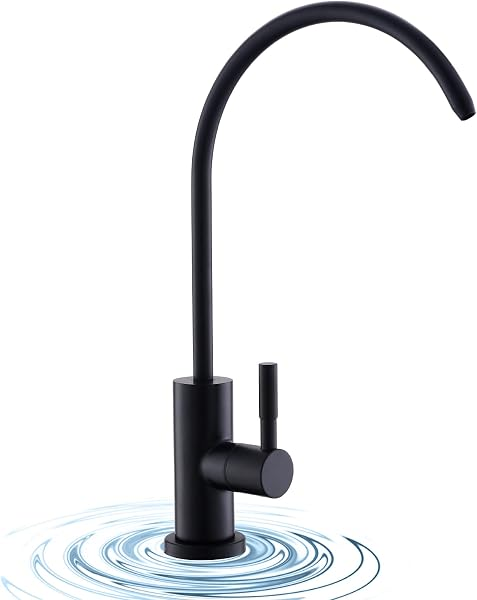

Shop By Use Case
Choose the right path
Start with the best reverse osmosis systems overall if you want the broad shortlist. Narrow it down with tankless systems, countertop systems, or RO systems for well water. If you are comparing add-ons instead of full systems, see our guide to reverse osmosis faucets.

Buying GuidesBest Reverse Osmosis Systems for Home in 2026 (Tested & Compared)
Read guide →

Buying GuidesBest Whole House Reverse Osmosis Systems in 2026 (Ranked & Compared)
Read guide →

Buying GuidesBest Countertop Reverse Osmosis Systems 2026 (No Plumbing Required)
Read guide →

Buying GuidesBest Tankless Reverse Osmosis Systems 2026 (Save Cabinet Space)
Read guide →

Buying GuidesReverse Osmosis Faucets: Air-Gap vs Non-Air-Gap (and Finishes) 2026
Read guide →

Buying GuidesBest Reverse Osmosis Systems for Well Water (2026)
Read guide →